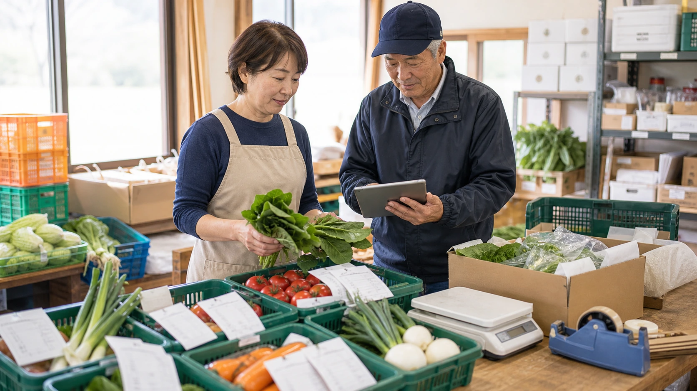

業務改善の例 / 農業・産直出荷
朝の注文数と収穫量を照らし合わせ、箱詰めの手戻りを減らす
注文メール、EC受注、収穫量メモから、出荷先ごとの梱包リストを作ります。足りない品目が朝のうちに分かるため、代替品の提案や顧客への連絡を出荷前に進められます。

先に結論
注文数と今朝採れた量が分かれば、迷わず箱詰めを始められます。
産直出荷の朝は、収穫量を数える横で、EC注文や電話注文、同梱の依頼が次々に入ります。
出荷担当は箱詰めを進めながら、足りない品目や代替案、返信が必要な注文を頭の中で管理していました。
注文メール、EC受注、在庫メモ、収穫量の写真をAIに読み込ませると、出荷先ごとの数量、箱詰め順、数量不足、連絡文案を記載した表を作れます。
出荷担当が野菜の状態を見て、代替品と価格を決めます。顧客への連絡は宛先と数量を読み直してから送ります。
仕事の変化
足りない品目が朝のうちに分かり、梱包の手戻りを減らせます。
注文を調べるたびに手袋を外し、箱詰めが止まる
朝の作業場で、出荷担当は伝票、EC画面、紙メモ、収穫量の記録を何度も見比べていました。箱詰めは進んでも、どの注文が確定していて、どれが代替連絡待ちなのかは最後まで残りがちでした。
足りない品目と連絡先が分かり、箱詰め前に代替品を決められる
AIには注文メール、EC受注、収穫量メモ、在庫写真を渡します。AIは出荷先ごとの数量、箱詰め順、不足候補、返信文の下書きに整理します。
出荷担当が代替品と連絡内容を決められる
足りない品目を箱詰め前に把握できるため、野菜の状態を見て代替品を決め、必要な顧客へ早めに連絡できます。
改善後の実感
注文と収穫量の差が朝のうちに分かり、出荷担当は不足品への対応から着手できます。
注文数と収穫量を一度に見られず、箱詰め後に不足へ気づく
注文確認と梱包準備の材料が散らばり、出荷担当が毎回探して確認していました。
梱包順と不足品が出荷先ごとに分かり、箱を開け直さずに済む
出荷先ごとの数量、箱詰め順、不足候補、返信下書きがそろいます。
梱包へ早く移れる
数量が足りない注文だけが一覧に残るため、出荷担当は代替品を決め、梱包前に顧客へ連絡できます。
朝の出荷準備
足りない注文を先に見つけ、梱包の手を止めない。
朝の作業場の長机には、注文メモ、EC受注の印刷、収穫量を書いた紙、箱詰め用の資材が並んでいました。出荷担当は箱を組み立てながら、電話注文で増えた分と今朝採れた量が合うかを頭の中で追っています。
スタッフから「この注文、同梱ありですか」と声をかけられるたびに、担当者は手袋を外してメール画面を開いていました。足りない品目が見つかると梱包の列が止まり、代替品を出せるのか、先に連絡すべき顧客は誰かが作業の途中で混ざっていました。
注文メール、EC受注、電話注文のメモ、収穫量メモ、在庫写真をAIに読み込ませます。AIは出荷先ごとの数量、箱詰め順、同梱メモ、数量不足、代替案、送信前の連絡文を朝の作業表へ記載します。
出荷担当は野菜の状態を見て、代替品に替えてよいか、価格を変える必要があるかを決めます。連絡文は注文数と宛先を読み直します。傷みや大きさを見て出荷できるかを決めるのは、現物を見ている出荷担当です。顧客へは、担当者が代替品と到着予定を伝えます。
不足や責任者待ちが早い時間に分かると、梱包の手戻りが減ります。担当者はスタッフへ箱詰め順を伝えやすくなり、顧客への連絡も出荷直前ではなく朝のうちに進められます。
改善のイメージ
不足品と配送希望が一枚で分かり、注文を探し直さず箱詰めを進められます。
出荷先ごとの箱数と不足品がすぐ分かる
出荷先ごとの箱数、不足品、同梱指定が一枚にまとまり、担当者はメールや紙メモを開き直さずに箱詰めできます。
不足と責任者待ちを見る
不足、代替、配送希望など、先に確認したい注文が見つけやすくなります。
梱包へ進む
チェックが終わったら、担当者は梱包、顧客連絡、スタッフへの指示に取りかかれます。
導入前
導入前は、注文を探し直すたびに箱詰めが止まり、不足品への連絡も遅れていました。
注文メール、EC受注、収穫量メモ、在庫写真を、担当者が何度も見比べていました。
どの注文が確定で、どれが代替連絡待ちかを、出荷担当が抱えていました。
箱詰めを進めながら、品質、代替案、送信内容も同時に確認していました。
仕事の流れ
AIが注文数と収穫量を一覧にし、出荷担当が品質と代替品を決めます。
注文メール、EC受注、収穫量メモ、在庫写真を、日付ごとの共有フォルダに集めます。
数量と箱詰め順を記載し、数量不足と配送希望に印を付けます。
数量不足のある注文へ、代替品の候補、顧客への連絡文案、スタッフへの指示案を添えます。
品質、代替提案、価格、数量、送信内容は人が見ます。
人とAIの分担
梱包リストはAIで作り、出荷できる品質かどうかは担当者が現物を見て決めます。
AIが作る梱包リストと連絡文案
- 受注情報の統合
- 梱包リスト作成
- 在庫不足の抽出
- 顧客連絡文の下書き
出荷担当が現物を見て決める項目
- 品質判断と代替提案
- 出荷可否
- 顧客への最終連絡
- 価格や数量の判断